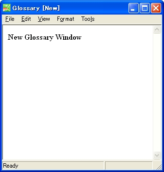

Felix Manual
3.2.10 Open a New Glossary Window
You can have several glossary windows open at once. Each glossary window can contain one or more glossaries, and can be searched independently. When a query is sent from one of the MS Office programs, Tag Assist, or another program, it is looked up in each of the glossary windows.
This is useful when you want to use another glossary alongside your main one, but want to keep the glossaries apart or handle them differently. One example of when this might come in handy is when you have a glossary for your client that you want to refer to, but don’t want to confuse it with your main glossary.
To open a new glossary window, from the File menu, select New > New Glossary.
A new glossary window opens.

You can then open one or more glossaries from the new glossary window. Note that the title of this window lacks the “MAIN” tag of the first Glossary window:

Note:
When you register glossary entries from the Memory
window, they are only sent to the Main glossary window. Additionally, when you
retrieve glossary entries via the interfaces, they are only retrieved from the Main
glossary window. To retrieve translations from other glossary windows, you will
have to type them in manually or use copy and paste. See
3.3.1 Controlling the Glossary Windows for more information.
Back (Change the UI Language) | Next (Set User Preferences )